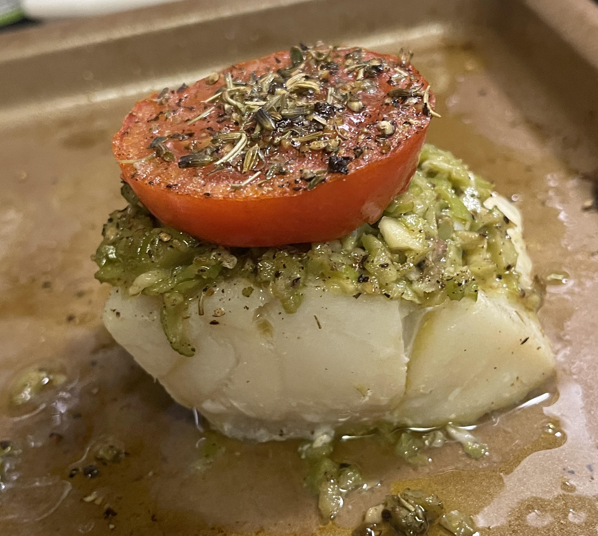

Fish With Tomatoes and Green Olive Tapenade

Description:
This simple summer recipe will give you a restaurant seafood quality meal that your whole
family will love! This dish sounds fancy, but it's easy and fun to prepare.
Tools Needed:
- Food processor
- Baking sheet
- Oven
Ingredients:
Tapenade:
- 1/2 cup pitted green olives
- 2 tbsp capers
- 2 anchovy fillets, rinsed and patted dry
- 2 garlic cloves, roughly chopped
- 3 tbsp olive oil
- lemon juice
- fresh ground pepper
Fish:
- 4 white fish fillets, such as sole or halibut (about 4oz each)
- 2 small tomatoes, sliced
- olive oil
- salt and pepper
- herbes de provence
Directions:
- For the tapenade: ulse olives, capers, anchovies and garlic in food processor until pureed.
Gradually add olive oil. Season with lemon juice and pepper.
- Preheat the oven to 400° F.
- Pat the fish dry, and place on baking sheet.
- Smear each fish fillet with a spoonful of the tapenade. Put sliced tomato on top, drizzle with olive oil,
and sprinkle with salt, pepper and herbes de provence.
- Bake until fish is cooked, 6 - 8 minutes.
- Serve warm and enjoy!